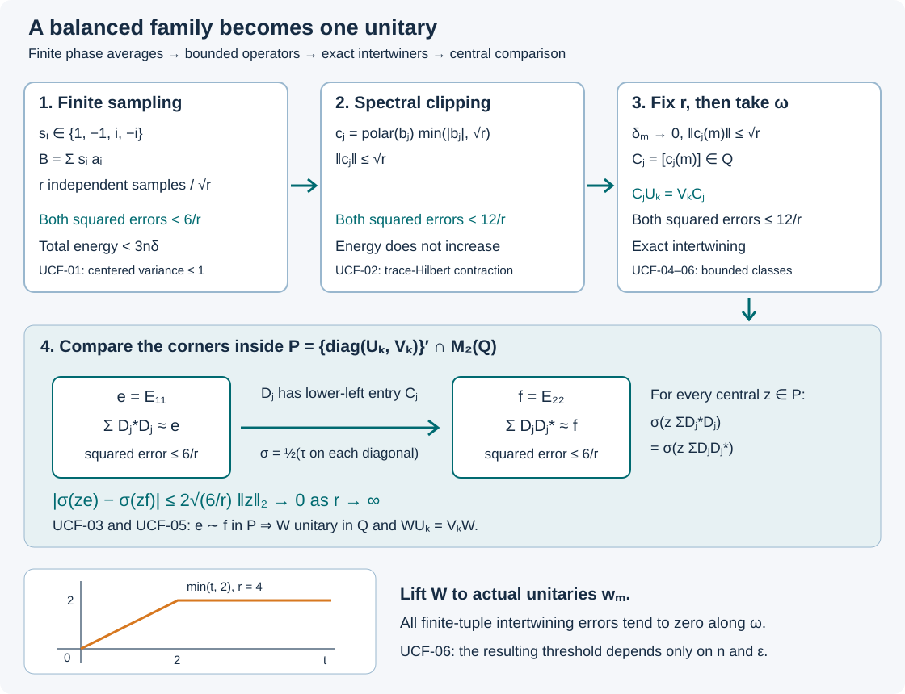

Unitary couplings and finite-factor approximation
A balanced family of operators can intertwine two unitary tuples almost exactly even though none of its members is unitary. We convert that family into one unitary. Finite phase sampling controls both positive sums; spectral clipping bounds each sampled operator; a tracial ultraproduct turns approximate intertwining into exact intertwining. Comparison inside the resulting commutant then joins its two coordinate projections.
The coupling theorem below is uniform over all von Neumann algebras equipped with a faithful normal tracial state. The final application uses injectivity and the factor hypothesis to produce local approximation by actual matrix subalgebras. It does not assume a countable generating sequence.
Finite phases and a sharper sampling estimate
Let \(M\) have a faithful normal tracial state \(\tau\), and write \(\|x\|_2^2=\tau(x^*x)\). Fix unitaries \(u_k,v_k\), \(1\le k\le n\), with \(n\ge1\). A balanced coupling is a finite or countable family satisfying
\[ \sum_i a_i^*a_i=\sum_i a_i a_i^*=1,\qquad E_k:=\sum_i\|a_i u_k-v_k a_i\|_2^2<\delta . \tag{UCF.1} \]Positive sums converge strongly. This is the relation defined in Exact coupling energy, variance, and composition. Zero terms may be appended.
Sampling lemma. For every integer \(r\ge1\), there are \(b_1,\ldots,b_r\in M\) such that
\[ \begin{aligned} \left\|\sum_j b_j^*b_j-1\right\|_2^2&<6/r,\\ \left\|\sum_j b_jb_j^*-1\right\|_2^2&<6/r,\\ \sum_j\|b_ju_k-v_kb_j\|_2^2&<3n\delta . \end{aligned} \tag{UCF.2} \]Proof. Choose a finite truncation with
\[ S=\sum_{i=1}^p a_i^*a_i\le1,\qquad T=\sum_{i=1}^p a_i a_i^*\le1,\qquad \tau(1-S)=\tau(1-T)<1/r. \]This uses normality of the trace on the positive sums. Choose each phase \(s_i\) independently and uniformly from \(\{1,-1,i,-i\}\), and put \(B=\sum_i s_i a_i\). Expectation here means an average over a finite set. A phase has zero mean in powers \(1,2,-1,-2\). Expansion therefore gives
\[ \begin{gathered} \mathbb E(B^*B)=S,\qquad \mathbb E(BB^*)=T,\\ \mathbb E\|Bu_k-v_kB\|_2^2 =\sum_{i=1}^p\|a_iu_k-v_ka_i\|_2^2<\delta. \end{gathered} \tag{UCF.3} \]In the fourth moment the two multisets of conjugated and unconjugated indices must agree. There are two pairings, with the all-equal term counted twice. Keeping the operator order gives
\[ \mathbb E((B^*B)^2) =S^2+\sum_i a_i^*T a_i-\sum_i(a_i^*a_i)^2 . \tag{UCF.4} \]Consequently the centered trace variance satisfies
\[ \mathbb E\|B^*B-S\|_2^2 =\tau\!\left(\sum_i a_i^*T a_i-\sum_i(a_i^*a_i)^2\right) \le\tau(S)\le1. \tag{UCF.5} \]The same calculation with adjoints gives variance at most one around \(T\).
Take \(r\) independent copies \(B_j\), and set \(S_r=r^{-1}\sum_j B_j^*B_j\). Cross terms of distinct centered copies have expectation zero, by independence and finite expansion, even though the operators need not commute. The cross term with \(S-1\) also has mean zero. Thus
\[ \mathbb E\|S_r-1\|_2^2 =r^{-1}\mathbb E\|B^*B-S\|_2^2+\|S-1\|_2^2 <2/r , \tag{UCF.6} \]because \((1-S)^2\le1-S\). The reversed sum has the same bound.
For a nonnegative function \(X\) on a finite probability space, \(\Pr(X\ge t)\le\mathbb E X/t\): average the pointwise inequality \(t\,1_{\{X\ge t\}}\le X\). Hence the two failures at level \(6/r\) each have probability below \(1/3\), and each averaged energy failure at level \(3n\delta\) has probability below \(1/(3n)\). The probability of their union is at most the sum, strictly below one. Choose a sample outside it and put \(b_j=B_j/\sqrt r\). This proves every inequality in (UCF.2). \(\square\)
Retaining the centered variance improves the source's constant \(9\) to \(6\). Four phases suffice; no Haar measure construction is needed.
Clipping preserves the intertwining energy
We use bounded polar decomposition, Polar decomposition and its regularized limit and bounded spectral calculus, Bounded Borel functions and the spectral measure and Transport, reduction, and membership in an algebra.
First, if \(f:\mathbb R\to\mathbb R\) is \(1\)-Lipschitz and \(H,K\) are bounded selfadjoint elements, then
\[ \|f(H)-f(K)\|_2\le\|H-K\|_2. \tag{UCF.7} \]For finite spectra \(H=\sum_\alpha\lambda_\alpha p_\alpha\), \(K=\sum_\beta\mu_\beta q_\beta\), expansion of the trace square gives
\[ \|f(H)-f(K)\|_2^2 =\sum_{\alpha,\beta}|f(\lambda_\alpha)-f(\mu_\beta)|^2 \tau(p_\alpha q_\beta). \]Each weight equals \(\tau(q_\beta p_\alpha q_\beta)\ge0\). Replace the scalar difference by \(|\lambda_\alpha-\mu_\beta|\) to prove (UCF.7) for finite spectra. Uniform step approximations on the bounded spectral intervals converge in operator norm, as do their \(f\)-values. Passing to the limit proves (UCF.7) in general.
Clipping lemma. There are \(c_1,\ldots,c_r\) such that
\[ \begin{gathered} \|c_j\|\le\sqrt r,\\ \left\|\sum_jc_j^*c_j-1\right\|_2^2<12/r,\qquad \left\|\sum_jc_jc_j^*-1\right\|_2^2<12/r,\\ \sum_j\|c_ju_k-v_kc_j\|_2^2<3n\delta . \end{gathered} \tag{UCF.8} \]For \(r=1\), take \(c_1=0\). For \(r\ge2\), choose (UCF.2), write \(b_j=w_j|b_j|\), and set
\[ c_j=w_j\min(|b_j|,\sqrt r). \tag{UCF.9} \]Thus \(c_j^*c_j=h(b_j^*b_j)\) and \(c_jc_j^*=h(b_jb_j^*)\), where \(h(t)=\min(t,r)\).
Here are the order details controlling the loss. For \(t\ge0\),
\[ 0\le t-h(t)\le (t-1)_+^2/(2r). \tag{UCF.10} \]When \(t>r\), subtracting \(2r(t-r)\) from \((t-1)^2\) gives \((t-r-1)^2+r(r-2)\ge0\); otherwise the left side is zero. For positive \(X\le Y\), the scalar trace values satisfy
\[ \tau((X-1)_+^2)\le\tau((Y-1)_+^2). \tag{UCF.11} \]Indeed
\[ \tau((X-1)_+^2) =\sup_{z\in M_+}\{2\tau((X-1)z)-\tau(z^2)\}. \]The expression is bounded above by completing the square with \((X-1)_+\), and equality holds for \(z=(X-1)_+\). The trace of the product of two positive elements is nonnegative, since it is the trace of a positive square-root sandwich. This proves monotonicity of the displayed supremum. No operator monotonicity of the squared positive-part function is asserted.
Put \(A=\sum_jb_j^*b_j\), \(C=\sum_jc_j^*c_j\). Then \(0\le C\le A\), and (UCF.10)–(UCF.11) give
\[ \tau(A-C)\le\tfrac12\|A-1\|_2^2. \]Also \(\tau(A^2)-\tau(C^2)=\tau((A-C)(A+C))\ge0\). It follows that
\[ \|C-1\|_2^2 \le\|A-1\|_2^2+2\tau(A-C) \le2\|A-1\|_2^2<12/r. \tag{UCF.12} \]Replacing every \(b_j\) by its adjoint proves the reversed bound.
For the energy, use the normalized product trace on \(M_2(M)\), and set
\[ H_j=\begin{pmatrix}0&b_j^*\\b_j&0\end{pmatrix},\quad s_k=\begin{pmatrix}u_k&0\\0&v_k\end{pmatrix},\quad f(t)=\max(-\sqrt r,\min(t,\sqrt r)). \]Functional calculus gives \(f(H_j)=\left(\begin{smallmatrix}0&c_j^*\\c_j&0\end{smallmatrix}\right)\). The two off-diagonal entries and the factor \(1/2\) in the trace give exactly
\[ \|H_j-s_kH_js_k^*\|_{2,M_2(M)}^2 =\|b_ju_k-v_kb_j\|_2^2. \]The same equality holds with \(f(H_j)\) and \(c_j\). Apply (UCF.7) and \(f(s_kH_js_k^*)=s_kf(H_j)s_k^*\); each clipped energy is no larger than its original value. Summing proves (UCF.8). \(\square\)
Projection comparison using central tests
Let \(N\) have a faithful normal tracial state \(\sigma\). For projections \(e,f\in N\), the following criterion includes nonfactors:
\[ e\sim f \quad\Longleftrightarrow\quad \sigma(ze)=\sigma(zf)\quad \text{for every central projection }z\in N. \tag{UCF.13} \]Equivalence means there is a partial isometry \(v\in N\) with \(v^*v=e\), \(vv^*=f\).
We recall the central-support fact proved in Matching two positive defects: the projection onto \(\overline{NeH}\) is \(c(e)\). In particular \(fNe=0\) implies \(fc(e)=0\), and then \(c(f)c(e)=0\), since \(1-c(e)\) is central and contains \(f\).
Choose a maximal family of nonzero partial isometries with mutually orthogonal initial projections under \(e\) and mutually orthogonal final projections under \(f\). A chain has its union as an upper bound, so Zorn's lemma applies. The family is countable: its positive initial traces have finite sums at most one, so only finitely many exceed any fixed positive threshold. Its sum \(v\) converges strongly together with its adjoint. Indeed orthogonality bounds the squared norm of each tail on a vector by the corresponding tail of an orthogonal projection sum. Hence \(v\in N\) and \(p=e-v^*v\), \(q=f-vv^*\) are projections.
If \(qNp\ne0\), the polar factor of a nonzero element adds another partial isometry, a contradiction. Thus \(c(p)c(q)=0\). With \(z=c(p)\), centrality and the trace give
\[ \sigma(ze)-\sigma(zf)=\sigma(zp)-\sigma(zq)=\sigma(p). \]Under the right side of (UCF.13), faithfulness forces \(p=0\). Taking \(z=c(q)\) likewise gives \(q=0\). This proves sufficiency. Necessity follows from \(\sigma(zv^*v)=\sigma(zvv^*)\). This argument constructs the comparison directly, without assuming existence of a center-valued trace.
As a consequence every polar factor in \(N\) extends to a unitary. Its two supports are equivalent; their complements have equal pairings with every central projection, and hence are equivalent by (UCF.13). Add a partial isometry on the two complementary supports.
Scalar trace alone is insufficient: in \(\mathbb C\oplus\mathbb C\) with equal coordinate weights, \(e=(1,0)\), \(f=(0,1)\) have equal total trace but are not equivalent. Testing the central projection \(z=e\) detects the obstruction.
Building the tracial ultraproduct and lifting its unitaries
Allow the algebras to vary: let \((M_m,\tau_m)\) be any sequence of von Neumann algebras with faithful normal tracial states. Choose a free ultrafilter \(\omega\) on \(\mathbb N\). Its existence and the scalar ultralimit rules follow from 1. A cofinal ultrafilter with an unbounded integer coordinate, applied to the cofinite filter.
In the algebra of uniformly bounded families put
\[ \begin{gathered} \mathcal I_\omega =\{(x_m):\lim_\omega\|x_m\|_{2,\tau_m}=0\},\\ Q=\prod_m M_m/\mathcal I_\omega,\qquad \tau_\omega([x_m])=\lim_\omega\tau_m(x_m). \end{gathered} \tag{UCF.14} \]The inequalities
\[ \|axb\|_2\le\|a\|\,\|b\|\,\|x\|_2,\qquad \|x^*\|_2=\|x\|_2\le\|x\| \]show that \(\mathcal I_\omega\) is a norm-closed two-sided selfadjoint ideal. The C*-quotient theorem, Theorem 15.1 therefore makes the quotient a unital C*-algebra. That earlier proof constructs the quotient norm using a contractive approximate identity of the ideal and proves the C*-identity. Cauchy–Schwarz makes the scalar trace well-defined; positivity, normalization and traciality pass to the ultralimit. If \(\tau_\omega(X^*X)=0\), its representative lies in the ideal, so this trace is faithful.
Every contraction in \(Q\) has a representative consisting of contractions. Start with any bounded representative \(x_m\), and replace it by \(x_m g(|x_m|)\), where \(g(t)=1\) for \(t\le1\) and \(g(t)=1/t\) for \(t\ge1\). Continuous functional calculus commutes with the quotient map, by uniform polynomial approximation. Since the quotient modulus has spectrum in \([0,1]\), this clipping does not change the class.
We prove completeness of the unit ball for the trace metric. Given a Cauchy sequence of classes, take a subsequence \(X^j\) such that \(\|X^{j+1}-X^j\|_2<2^{-2j}\), and choose contractive representatives \(x_m^j\). For each \(j\), the set where \(\|x_m^{j+1}-x_m^j\|_2<2^{-j}\) belongs to \(\omega\). Let \(A_j\) be the intersection of these sets for \(1\le\ell<j\), together with \(\{m:m\ge j\}\). These sets decrease, belong to \(\omega\), and have empty intersection. Let \(j(m)=\max\{j:m\in A_j\}\), taking \(j(m)=1\) if necessary; it is finite and tends to infinity along \(\omega\). For \(y_m=x_m^{j(m)}\), telescoping on \(A_j\) gives
\[ \|y_m-x_m^j\|_2\le\sum_{\ell=j}^{j(m)-1}2^{-\ell}\le2^{1-j}. \]Thus \([y_m]\) is the trace-metric limit of the subsequence, and hence of the original Cauchy sequence, in the unit ball.
The finite-algebra completeness criterion, Proposition 2.1 now makes \(Q\) a finite von Neumann algebra with faithful normal trace \(\tau_\omega\). That earlier proof uses bounded strong density in the trace GNS representation: a strong limit of contractions is determined on the trace vector by the complete trace metric, and then on a dense set by bounded right multiplication. It does not require separability.
Unitary lifts. If \(W=[x_m]\) is unitary, extend the polar factor of each \(x_m\) to a unitary \(w_m\), using UCF-03. Then
\[ \begin{aligned} \|x_m-w_m\|_2^2 &=\tau_m((|x_m|-1)^2)\\ &\le\tau_m((|x_m|^2-1)^2)\\ &=\|x_m^*x_m-1\|_2^2\longrightarrow_\omega0. \end{aligned} \tag{UCF.15} \]The scalar inequality is \(|t-1|\le|t^2-1|\) for \(t\ge0\). Thus \([w_m]=W\). Neither this lift nor the construction of \(Q\) requires it to be a factor.
Exact intertwiners balance the two corners
Let \(U_k,V_k\in\mathcal U(Q)\), and in \(N=M_2(Q)\) use \(\sigma=\tau_2\otimes\tau_\omega\), where \(\tau_2(I_2)=1\). Put
\[ s_k=\begin{pmatrix}U_k&0\\0&V_k\end{pmatrix},\qquad P=N\cap\{s_1,\ldots,s_n\}'. \tag{UCF.16} \]Commuting with a unitary also implies commuting with its inverse. Thus \(P\) is a strongly closed unital *-algebra; \(\sigma|_P\) is faithful, normal and tracial. Let \(e=E_{11}\), \(f=E_{22}\), which belong to \(P\).
Suppose for every \(r\ge1\) there are \(C_1,\ldots,C_r\in Q\) with
\[ \begin{gathered} C_jU_k=V_kC_j,\\ \left\|\sum_j C_j^*C_j-1\right\|_2^2\le12/r,\quad \left\|\sum_j C_jC_j^*-1\right\|_2^2\le12/r. \end{gathered} \tag{UCF.17} \]Define \(D_j=\left(\begin{smallmatrix}0&0\\C_j&0\end{smallmatrix}\right)\in P\). The normalization of the matrix trace gives
\[ \left\|\sum_jD_j^*D_j-e\right\|_{2,\sigma}^2\le6/r,\qquad \left\|\sum_jD_jD_j^*-f\right\|_{2,\sigma}^2\le6/r . \tag{UCF.18} \]For a central projection \(z\in P\), traciality and \(zD_j=D_jz\) equate the pairings of the two middle sums. Cauchy–Schwarz, with square roots of (UCF.18), yields
\[ |\sigma(ze)-\sigma(zf)| \le2\sqrt{6/r}\,\|z\|_{2,\sigma}. \tag{UCF.19} \]Letting \(r\to\infty\) proves equality for every such \(z\). UCF-03 gives a partial isometry \(W_0\in P\) from \(e\) onto \(f\). Its support equations force
\[ W_0=\begin{pmatrix}0&0\\W&0\end{pmatrix},\qquad W^*W=WW^*=1,\qquad WU_k=V_kW. \tag{UCF.20} \]This is the exact unitary obtained from the family of intertwiners. The comparison takes place inside \(P\), whose center may be nontrivial even when \(Q\) is a factor.
A uniform coupling theorem
Theorem. For every \(n\ge1\) and \(\varepsilon>0\), there is \(\delta=\delta(n,\varepsilon)>0\), independent of the algebra and its trace, with this property: whenever \(M\) has a faithful normal tracial state and two \(n\)-tuples satisfy (UCF.1), some \(w\in\mathcal U(M)\) satisfies
\[ \max_k\|wu_k-v_kw\|_2<\varepsilon . \tag{UCF.21} \]Proof. If no uniform \(\delta\) exists, for each \(m\) choose an algebra \((M_m,\tau_m)\) and \(1/m\)-related tuples such that every unitary \(w\in M_m\) has at least one error in (UCF.21) at least \(\varepsilon\). Form \(Q\) as in UCF-04 and let \(U_k=[u_k(m)]\), \(V_k=[v_k(m)]\).
Fix \(r\). For every \(m\), UCF-02 gives \(c_1(m),\ldots,c_r(m)\), each of norm at most \(\sqrt r\). Hence these define bounded classes \(C_j\in Q\). Their individual intertwining energies are bounded by the total \(3n/m\), so \(C_jU_k=V_kC_j\). Both marginal squared errors have ultralimits at most \(12/r\). All of (UCF.17) follows.
UCF-05 supplies a unitary \(W\in Q\) intertwining every pair \(U_k,V_k\). Lift it to unitaries \(w_m\) by UCF-04. For each \(k\),
\[ \lim_\omega\|w_mu_k(m)-v_k(m)w_m\|_2=0. \]The intersection of the finitely many sets where these errors are below \(\varepsilon\) belongs to \(\omega\), and is therefore nonempty. Any index in it contradicts the choice of \(M_m,u_k(m),v_k(m)\). \(\square\)
The proof establishes existence of a uniform modulus, not a numerical formula for it. The truncation size \(r\) is fixed while the ultralimit in \(m\) is taken; only afterwards do the central tests let \(r\to\infty\). Letting \(r\) grow with \(m\) would lose the uniform operator bound needed to define the classes.
There is a useful interpretation of the coupling pseudometric from BKC-06. Write
\[ \begin{aligned} d(u,v)&=\inf_a\max_k E_a(u_k,v_k)^{1/2},\\ D(u,v)&=\inf_{w\in\mathcal U(M)}\max_k\|wu_k-v_kw\|_2. \end{aligned} \tag{UCF.22} \]A single unitary \(a_1=w\) is balanced, so \(d\le D\). Conversely, given \(\varepsilon\), if \(d<\sqrt{\delta(n,\varepsilon)}\), choose a family whose energies are all below that \(\delta\), and apply (UCF.21). Thus \(D<\varepsilon\). The two distances define the same notion of convergence and the same zero-distance relation, uniformly over these algebras. This does not assert exact conjugacy when the infimum is zero.
From injectivity to local matrix approximation
Let \(M\) be an injective \(\mathrm{II}_1\) factor with normalized trace \(\tau\). For every finite set of its unitaries and every \(\delta>0\), From finite models to balanced unitary couplings constructs a unital matrix subfactor \(D\subset M\), unitaries \(v_k\in D\), and a balanced coupling of arbitrarily small energy to the given \(u_k\). Choose the threshold from UCF-06. The resulting unitary gives
\[ \|u_k-w^*v_kw\|_2<\varepsilon,\qquad w^*v_kw\in w^*Dw. \tag{UCF.23} \]Thus the approximants lie in one actual matrix subalgebra.
For arbitrary \(x\in M\), write \(x=a+ib\), with \(a,b\) selfadjoint and \(\|a\|,\|b\|\le\|x\|\). If \(a\ne0\), put \(h=a/\|a\|\). Functional calculus gives the unitary \(v=h+i(1-h^2)^{1/2}\), since its commuting real and imaginary parts have squares summing to one. Then \(a=\|a\|(v+v^*)/2\). Do the same for \(b\), omitting zero summands. Hence \(x\) is a combination of at most four unitaries with coefficient absolute sum at most \(2\|x\|\).
For a finite set of elements, collect all these unitary summands. If \(L\) is the maximum coefficient sum, use a unitary error smaller than \(\varepsilon/(L+1)\). Replace each summand using (UCF.23). The resulting \(y_x\) lie in a common matrix algebra, have
\[ \|x-y_x\|_2<\varepsilon,\qquad \|y_x\|\le2\|x\|. \tag{UCF.24} \]The operator bounds remain fixed as the error shrinks.
Finally, the faithful-state metric criterion, Lemma 1.3 says that bounded trace-\(2\)-norm convergence is \(\sigma\)-strong* convergence: the trace gives the same \(2\)-norm to \(x\) and \(x^*\). Explicitly, that proof approximates each of finitely many test vectors by commutant translates of the trace vector and controls the remaining coefficient-series tail uniformly by the operator bound. Consequently (UCF.24) meets every prescribed \(\sigma\)-strong* neighborhood on the finite set.
This proves local approximate finite dimensionality for every injective \(\mathrm{II}_1\) factor. A generating increasing sequence and its identification with the separable hyperfinite factor require their separate exact-containment and countability arguments; neither is part of the local conclusion just proved.
Constants, source corrections and proof scope

Figure. The top row distinguishes the finite sampling bound from the clipped operator bound. The two lower corners carry the normalized trace factor \(1/2\). Their central trace difference is bounded by (UCF.19), then vanishes as \(r\) grows; projection comparison supplies the unitary in (UCF.20). The clipping graph is the actual scalar function at \(r=4\), with height \(2\). The diagram is schematic about the algebras and exact about the constants and maps. Proofs: UCF-01–06.
For a finite check of the phase calculation, take \(a_1=e_{11}\), \(a_2=e_{22}\) in \(M_2\). Then \(B=\operatorname{diag}(s_1,s_2)\), so \(B^*B=I\) for every choice of the four phases. The variance in (UCF.5) is exactly zero; (UCF.4) gives \(I+I-I=I\). Replacing the four phases by real signs is not justified by that calculation: for scalars \(a_1=a_2=1/\sqrt2\), the fourth moment is \(2\) with independent real signs and \(3/2\) with the four phases. The additional real-sign pairing changes the formula.
Clipping's scalar estimate is sharp at \(r=2,t=3\): both sides of (UCF.10) equal one. Its Hilbert-space estimate concerns trace \(2\)-norm; no operator-norm Lipschitz theorem for arbitrary scalar Lipschitz functions has been used.
The source comparison is with M. Takesaki, Theory of Operator Algebras III, Chapter XVI, §1, printed pp.227–236:
- Theorem 1.19 is proved in UCF-03–06, including its sampling and clipping inputs. UCF-06 strengthens its separable-factor statement to a modulus uniform over all faithfully tracial finite algebras.
- Lemma 1.20, pp.228–231, is proved in UCF-01 with \(6/r\) instead of \(9/r\). Lemma 1.21, pp.231–233, is proved in UCF-02 with \(12/r\) instead of \(18/r\).
- In the first displayed mean-square expression near the bottom of p.230, the summand must be \(b(\omega_i)^*b(\omega_i)\), not \(b(\omega_i)\). Its expansion and the subsequent good-sample event require the positive product.
- On p.234 the counterexample inequality must quantify over unitaries \(w\), as it does in the concluding contradiction on p.236. Quantification over every \(w\in M\) is false, since \(w=0\) has zero intertwining error.
- On p.235 the squared block-error bound \(9/r\) gives norm bound \(3/\sqrt r\). Each absolute trace pairing is therefore at most \(3\|P\|_2/\sqrt r\), and the final difference is at most \(6/\sqrt r\), not \(18/r\). The corrected estimate still tends to zero. A scalar counterexample to the unsupported inference is \(X=I/4\), \(P=I\), \(r=144\): \(\|X\|_2^2=9/r=1/16\), but \(|\tau(PX)|=1/4>1/16\).
- The finite-factor deduction of Theorem 1.9 on p.228 is proved in UCF-07. This credits that proof component only. Corollary 1.22, the general nonfactor conclusion, and the subsequent second proof retain separate obligations.
The earlier programme lesson Unitary couplings and finite injective factors, Sections 1–4 provides a comparison proof and also retains the necessary square root. Here the central-test comparison is proved directly, the varying-algebra quotient is constructed, and the centered finite-phase calculation supplies the sharper constants. The two specifically linked topology and completeness results are earlier programme proofs; no external citation substitutes for those arguments.